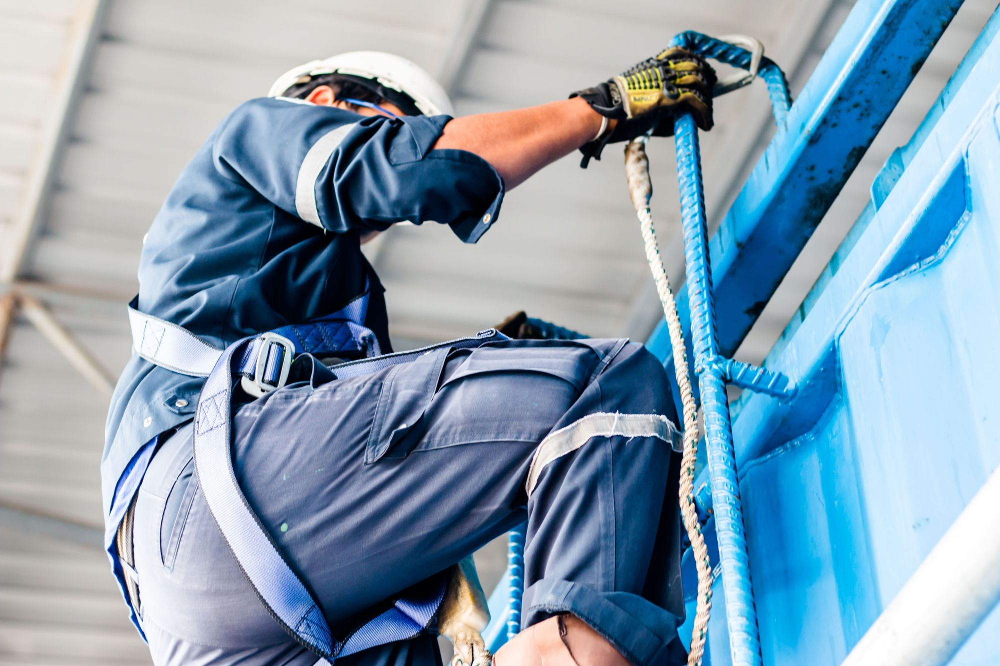

Our Best Quality
Наши Услуги

АООТ "Атиячландырыш меркези"
Добровольное ипотечное страхование
Объектом ипотечного страхования является имущественный
интерес Страхователя в получении компенсации от стоимости
застрахованного имущества, которым страхователь владеет,
пользуется или распоряжается.
К застрахованному имуществу относится недвижимое имущество, перемещение которого без соразмерного ущерба их назначению невозможно, в том числе находящее в собственности, хозяйственном ведении или управлении физических или юридических лиц:здания, сооружения, жилые дома, квартиры, иные имущественные комплексы и другое имущество, отнесенное законодательством Туркменистана к недвижимому. К страховым случаям относятся следующие события, в результате которых причинен ущерб застрахованному имуществу:
-пожар или иное причинение ущерба в результате пожара;
-стихийные бедствия (землетрясение, действие подземного огня, оползень, горный обвал, удар молнии, сель, буря, вихрь, ураган, наводнение, паводок, затопление из-за поднятия грунтовых вод и др.);
-повреждение водой из водопроводных, канализационных, отопительных систем и систем пожаротушения;
-падение пилотируемых летающих объектов или их обломков;
-ущерб в результате злоумышленных действий третьих лиц. Ущерб от повреждения огнем, возникший не в результате пожара, а также ущерб, причиненный застрахованному имуществу в результате его обработки огнем, теплом или иного термического воздействия на него с целью его переработки или в иных целях не покрываются страхованием и возмещению не подлежат. Перечень страховых случаев, при наступлении которых Страховщик обязан произвести выплату страхового возмещения Страхователю, определяется в договоре страхования.
К застрахованному имуществу относится недвижимое имущество, перемещение которого без соразмерного ущерба их назначению невозможно, в том числе находящее в собственности, хозяйственном ведении или управлении физических или юридических лиц:здания, сооружения, жилые дома, квартиры, иные имущественные комплексы и другое имущество, отнесенное законодательством Туркменистана к недвижимому. К страховым случаям относятся следующие события, в результате которых причинен ущерб застрахованному имуществу:
-пожар или иное причинение ущерба в результате пожара;
-стихийные бедствия (землетрясение, действие подземного огня, оползень, горный обвал, удар молнии, сель, буря, вихрь, ураган, наводнение, паводок, затопление из-за поднятия грунтовых вод и др.);
-повреждение водой из водопроводных, канализационных, отопительных систем и систем пожаротушения;
-падение пилотируемых летающих объектов или их обломков;
-ущерб в результате злоумышленных действий третьих лиц. Ущерб от повреждения огнем, возникший не в результате пожара, а также ущерб, причиненный застрахованному имуществу в результате его обработки огнем, теплом или иного термического воздействия на него с целью его переработки или в иных целях не покрываются страхованием и возмещению не подлежат. Перечень страховых случаев, при наступлении которых Страховщик обязан произвести выплату страхового возмещения Страхователю, определяется в договоре страхования.

АООТ "Атиячландырыш меркези"
Добровольное страхование транспортных средств
Oбъектом страхования являются имущественные интересы,
связанные с владением, использованием и распоряжением
автотранспортного средства Страхователем. По согласованию
сторон, нижеследующие подлежат страхованию при
установлении дополнительной страховой суммы в договоре
страхования:
- несчастные случаи, произошедшие с водителями и пассажирами, находившихся в автотранспортном средстве;
- временная или полная потеря трудоспособности;
- расходы на здравоохранение;
- гражданско-правовая ответственность владельца автотранспортного средства перед третьими лицами;
Страховая защита не распространяется на драгоценные предметы, драгоценные металлы, изделия из драгоценных металлов, драгоценные и полудрагоценные камни и сделанные из них изделия, кино-видеоаппаратуру, религиозные предметы, рукописи, денежные знаки, ценные бумаги, документы и фотоснимки, находящиеся автотранспортном средстве в качестве багажа. Жизнь и здоровье пассажира и (или) водителя (далее – Застрахованное лицо) автотранспортного средства являются объектом страхования водителя и пассажира автотранспортного средства от несчастных случаев. Страховщик выплачивает страховую сумму (страховое возмещение) при наступлении страхового случая указанного в договоре страхования водителя и пассажира автотранспортного средства от несчастных случаев. При наступлении страхового случая указанного в договоре страхования гражданско-правовой ответственности владельца автотранспортного средства перед третьими лицами, вред (ущерб), причиненный жизни, здоровью и (или) имуществу третьих лиц является объектом страхования. В соответствии с договором страхования Страховщик возмещает вред(ущерб), причиненный Страхователем жизни, здоровью и имуществу третьих лиц в результате аварии (столкновения, опрокидывания, наезда на стоящее автотранспортное средство, преграду, пешехода, пассажира на велосипеде, тележку, падения пассажира, а также других видов дорожно-транспортных происшествий).
- несчастные случаи, произошедшие с водителями и пассажирами, находившихся в автотранспортном средстве;
- временная или полная потеря трудоспособности;
- расходы на здравоохранение;
- гражданско-правовая ответственность владельца автотранспортного средства перед третьими лицами;
Страховая защита не распространяется на драгоценные предметы, драгоценные металлы, изделия из драгоценных металлов, драгоценные и полудрагоценные камни и сделанные из них изделия, кино-видеоаппаратуру, религиозные предметы, рукописи, денежные знаки, ценные бумаги, документы и фотоснимки, находящиеся автотранспортном средстве в качестве багажа. Жизнь и здоровье пассажира и (или) водителя (далее – Застрахованное лицо) автотранспортного средства являются объектом страхования водителя и пассажира автотранспортного средства от несчастных случаев. Страховщик выплачивает страховую сумму (страховое возмещение) при наступлении страхового случая указанного в договоре страхования водителя и пассажира автотранспортного средства от несчастных случаев. При наступлении страхового случая указанного в договоре страхования гражданско-правовой ответственности владельца автотранспортного средства перед третьими лицами, вред (ущерб), причиненный жизни, здоровью и (или) имуществу третьих лиц является объектом страхования. В соответствии с договором страхования Страховщик возмещает вред(ущерб), причиненный Страхователем жизни, здоровью и имуществу третьих лиц в результате аварии (столкновения, опрокидывания, наезда на стоящее автотранспортное средство, преграду, пешехода, пассажира на велосипеде, тележку, падения пассажира, а также других видов дорожно-транспортных происшествий).
АООТ "Атиячландырыш меркези"
Добровольное страхование имущества предприятий
Страхователь - физическое лицо - предприниматель без
образования юридического лица или юридическое лицо,
являющееся стороной договора страхования, уплачивающее
страховой взнос (страховую премию) и обладающее страховым
интересом в страховании объекта страхования; Страхование
покрывает:
a. здания (производственного, административного, социально-культурного назначения, общественного пользования и др.);
b. сооружения (башни, мачты, агрегаты и другие производственно-технологические сооружения);
c. инженерное и производственно-технологическое оборудование (связь, системы, устройства, электронно-вычислительное оборудование, станки, трансмиссионные и силовые машины, другие механизмы и устройства);
d. хозяйственные постройки (гаражи, склады, склады, навесы, крытые территории, заборы и др.);
e. отдельные помещения (мастерские, лаборатории, учебные кабинеты и др.);
f. объект незавершенного строительства;
g. объект незавершенного строительства;
h. инвентарь, технологическое оборудование;
i. меблировка, мебель, декор;
j. товарно-материальные ценности (товары, сырье). Если иное не указано в договоре страхования, страхование не распространяется на: a. наличные деньги в национальной и иностранной валюте; b. акции, облигации и другие ценные бумаги; c. рукописи, планы, чертежи и другие документы, бухгалтерские и хозяйственные книги; d. модели, выкройки, образцы, формы и др .; e. драгоценные металлы в слитках и драгоценные камни без оправы; f. носители данных компьютерных и аналогичных систем, в частности, магнитные пленки и ленты, магнитные диски, блоки памяти и т.д .; g. марки, монеты, банкноты и облигации, рисунки, картины, скульптуры или другие коллекции или произведения искусства; h. взрывчатые и взрывоопасные вещества (бензин, дизельное топливо, масло, газ и др.); i. товары на складе или в комиссии; j. транспортные средства, мобильные, строительные, сельскохозяйственные или другие транспортные средства; k. имущество, находящееся в застрахованном помещении, но не имущество, принадлежащее застрахованному; l. сельскохозяйственных животных, многолетних растений и сельскохозяйственных культур; m. находящиеся в аварийном состоянии здания и сооружения, элементы конструкций и инженерные системы, а также находящееся в них имущество; n. имущество, находящееся в зоне, которой угрожают оползни, оползни, наводнения или другие стихийные бедствия, а также в военной зоне с момента объявления такой угрозы в установленном порядке, если такое объявление было сделано до заключения договора страхования ; o. иное имущество, изъятое из оборота или ограниченное в обороте. Страхование перечисленных выше предметов может быть заключено по соглашению сторон и должно быть оформлено с внесением особых изменений в договор страхования (страховой полис).
a. здания (производственного, административного, социально-культурного назначения, общественного пользования и др.);
b. сооружения (башни, мачты, агрегаты и другие производственно-технологические сооружения);
c. инженерное и производственно-технологическое оборудование (связь, системы, устройства, электронно-вычислительное оборудование, станки, трансмиссионные и силовые машины, другие механизмы и устройства);
d. хозяйственные постройки (гаражи, склады, склады, навесы, крытые территории, заборы и др.);
e. отдельные помещения (мастерские, лаборатории, учебные кабинеты и др.);
f. объект незавершенного строительства;
g. объект незавершенного строительства;
h. инвентарь, технологическое оборудование;
i. меблировка, мебель, декор;
j. товарно-материальные ценности (товары, сырье). Если иное не указано в договоре страхования, страхование не распространяется на: a. наличные деньги в национальной и иностранной валюте; b. акции, облигации и другие ценные бумаги; c. рукописи, планы, чертежи и другие документы, бухгалтерские и хозяйственные книги; d. модели, выкройки, образцы, формы и др .; e. драгоценные металлы в слитках и драгоценные камни без оправы; f. носители данных компьютерных и аналогичных систем, в частности, магнитные пленки и ленты, магнитные диски, блоки памяти и т.д .; g. марки, монеты, банкноты и облигации, рисунки, картины, скульптуры или другие коллекции или произведения искусства; h. взрывчатые и взрывоопасные вещества (бензин, дизельное топливо, масло, газ и др.); i. товары на складе или в комиссии; j. транспортные средства, мобильные, строительные, сельскохозяйственные или другие транспортные средства; k. имущество, находящееся в застрахованном помещении, но не имущество, принадлежащее застрахованному; l. сельскохозяйственных животных, многолетних растений и сельскохозяйственных культур; m. находящиеся в аварийном состоянии здания и сооружения, элементы конструкций и инженерные системы, а также находящееся в них имущество; n. имущество, находящееся в зоне, которой угрожают оползни, оползни, наводнения или другие стихийные бедствия, а также в военной зоне с момента объявления такой угрозы в установленном порядке, если такое объявление было сделано до заключения договора страхования ; o. иное имущество, изъятое из оборота или ограниченное в обороте. Страхование перечисленных выше предметов может быть заключено по соглашению сторон и должно быть оформлено с внесением особых изменений в договор страхования (страховой полис).

АООТ "Атиячландырыш меркези"
Добровольное страхование грузов
Объектом страхования являются имущественные интересы
Страхователя на момент заключения договора страхования.
Объектом страхования могут быть: грузы, комиссия, фрахт и другие расходы, связанные с перевозкой грузов; убытки, связанных с перевозкой грузов, нанесенные Страхователю вследствие наступления страхового случая, являются объектом страхования, если это предусмотрено договором страхования.
Конкретный объект страхования указывается в Заявлении по добровольному страхованию грузов (приложение №1), оформляемому Страхователем, и в Страховом свидетельстве-полисе по добровольному страхованию грузов (Приложение №2). При необходимости к договору страхования прилагается опись груза (приложение №1-а).
Страхование перевозки специальных грузов: драгоценных металлов и камней (ювелирных изделий, золота, платины и металлов платиновой группы в слитках или в ломе), дорогих мехов, банкнот, монет, ценных бумаг, валютных ценностей, марок, документов, предметов имеющих особую художественную или историческую ценность, личных вещей и имущества, багажа (независимо от вида транспорта) осуществляется на основании дополнительного соглашения.
Страхование грузов со специфическими физико - химическими свойствами (воспламеняющихся, взрывоопасных, опасных грузов), негабаритных установок, морских бурильных установок, судов на палубах морских судов, грузов, особо подверженных бою и лому, также осуществляется на основании дополнительного соглашения.
Объектом страхования могут быть: грузы, комиссия, фрахт и другие расходы, связанные с перевозкой грузов; убытки, связанных с перевозкой грузов, нанесенные Страхователю вследствие наступления страхового случая, являются объектом страхования, если это предусмотрено договором страхования.
Конкретный объект страхования указывается в Заявлении по добровольному страхованию грузов (приложение №1), оформляемому Страхователем, и в Страховом свидетельстве-полисе по добровольному страхованию грузов (Приложение №2). При необходимости к договору страхования прилагается опись груза (приложение №1-а).
Страхование перевозки специальных грузов: драгоценных металлов и камней (ювелирных изделий, золота, платины и металлов платиновой группы в слитках или в ломе), дорогих мехов, банкнот, монет, ценных бумаг, валютных ценностей, марок, документов, предметов имеющих особую художественную или историческую ценность, личных вещей и имущества, багажа (независимо от вида транспорта) осуществляется на основании дополнительного соглашения.
Страхование грузов со специфическими физико - химическими свойствами (воспламеняющихся, взрывоопасных, опасных грузов), негабаритных установок, морских бурильных установок, судов на палубах морских судов, грузов, особо подверженных бою и лому, также осуществляется на основании дополнительного соглашения.

АООТ "Атиячландырыш меркези"
Добровольное страхование жилых помещений принадлежащих
гражданам на праве частной собственности.
Объектами страхования могут являться жилые помещения, принадлежащие Страхователю (Выгодоприобретателю) на праве частной собственности, к которым относятся отдельно стоящие жилые дома, либо квартира в многоквартирном жилом доме, включая все конструктивные элементы, а также элементы отделки и оборудования: стены и перегородки (оклеенные обои и другие покрытия); полы, потолок, двери с обивкой; оконные и дверные коробки и рамы; стекла и витражи; дверные ручки; дверные замки; электрические звонки; электропроводка и электросчетчики, сантехническое оборудование; отопительные установки и другие.
По настоящим Правилам не могут быть застрахованы отдельно стоящие жилые дома, жилые помещения или квартиры, находящиеся в многоквартирном жилом доме, которые:
a. признаны в установленном порядке не пригодными для проживания либо находящиеся в аварийном состоянии;
b. расположены в зонах, опасных для проживания, которым угрожают обвалы, наводнения или другие стихийные бедствия с момента объявления, в установленном порядке о такой угрозе или составления компетентными органами (гидрометеорологическая служба и другие) соответствующего документа (акта, заключения и т.п.), подтверждающего факт угрозы;
c. не приняты в эксплуатацию в соответствии с нормативными правовыми актами Туркменистана.

АООТ "Атиячландырыш меркези"
Добровольное коллективное страхования от несчастных
случаев работников за счет средств юридических лиц.
Объектом страхования являются личные интересы
Застрахованного лица, связанные с причинением ему вреда
жизни или здоровью, в результате несчастного случая,
произошедшего во время выполнения им своих трудовых
обязанностей, а также по пути к месту работы или обратно.
Страховым случаем признается событие или обстоятельство,
произошедшее в период действия договора страхования, в
результате которого причинен вред жизни или здоровью
Застрахованного лица при выполнении им трудовых
обязанностей, а также по пути на работу или обратно. К
страховому случаю также относятся:
а. патологические роды или внематочная беременность, ставшие причиной удаления органов (матки, обеих или единственной маточной трубы, яичников);
б. случайное острое отравление ядовитыми растениями, химическими веществами (промышленного или бытового происхождения), недоброкачественными пищевыми продуктами, за исключением пищевой токсикоинфекции (сальмонеллёза, дизентерии и т.п.), лекарствами, асфиксия (удушье), клещевой или после прививочный энцефалит (энцефаломиелит), поражение электротоком (атмосферным электричеством), укусы змей, ядовитых насекомых, столбняк, ботулизм. События не могут быть признаны страховыми и не подлежит возмещению вред, причиненный Застрахованному лицу в результате:
а. совершения действий, в которых органами дознания, предварительного следствия или судом (казыетом) установлены признаки умышленного преступления;
б. алкогольного, наркотического или психотропного опьянения;
в. самоубийства (покушения на самоубийство), за исключением случаев, когда Застрахованное лицо было доведено до такого состояния противоправными действиями третьих лиц;
г. умышленного причинения Застрахованным лицом себе телесных повреждений;
д. умышленных действий Страхователя (либо предполагаемых наследников Застрахованного лица), в результате которых наступила смерть Застрахованного лица.
а. патологические роды или внематочная беременность, ставшие причиной удаления органов (матки, обеих или единственной маточной трубы, яичников);
б. случайное острое отравление ядовитыми растениями, химическими веществами (промышленного или бытового происхождения), недоброкачественными пищевыми продуктами, за исключением пищевой токсикоинфекции (сальмонеллёза, дизентерии и т.п.), лекарствами, асфиксия (удушье), клещевой или после прививочный энцефалит (энцефаломиелит), поражение электротоком (атмосферным электричеством), укусы змей, ядовитых насекомых, столбняк, ботулизм. События не могут быть признаны страховыми и не подлежит возмещению вред, причиненный Застрахованному лицу в результате:
а. совершения действий, в которых органами дознания, предварительного следствия или судом (казыетом) установлены признаки умышленного преступления;
б. алкогольного, наркотического или психотропного опьянения;
в. самоубийства (покушения на самоубийство), за исключением случаев, когда Застрахованное лицо было доведено до такого состояния противоправными действиями третьих лиц;
г. умышленного причинения Застрахованным лицом себе телесных повреждений;
д. умышленных действий Страхователя (либо предполагаемых наследников Застрахованного лица), в результате которых наступила смерть Застрахованного лица.

АООТ "Атиячландырыш меркези"
Добровольное страхование здоровья граждан, выезжающих за
пределы Туркменистана.
Объектом страхования являются личные интересы Страхователя
(Застрахованного лица), связанные с причинением вреда его
жизни или здоровью, в результате страхового случая,
произошедшего во время пребывания на территории
страхования.
Страховым случаем признается внезапное заболевание, несчастный случай, а также смерть Застрахованного лица, произошедшие в период действия договора страхования, во время пребывания Застрахованного лица на территории страхования. Застрахованное лицо (в случае его смерти - его наследник (правопреемник)) обязано предоставить доказательства в отношении подлежащей возмещению Страховщиком суммы расходов, понесенных в связи с возникновением страхового случая.
Страховым случаем признается внезапное заболевание, несчастный случай, а также смерть Застрахованного лица, произошедшие в период действия договора страхования, во время пребывания Застрахованного лица на территории страхования. Застрахованное лицо (в случае его смерти - его наследник (правопреемник)) обязано предоставить доказательства в отношении подлежащей возмещению Страховщиком суммы расходов, понесенных в связи с возникновением страхового случая.
АООТ "Атиячландырыш меркези"
Добровольное страхование строительно-монтажных работ
1. Объектами страхования являются:
a. объекты строительных работ, в том числе здания, сооружения и иные объекты, строительные материалы и установки, а также другое имущество, предусмотренное в проектно-сметных документациях и являющееся предметом или средством осуществления строительных работ;
b. монтажные работы, в том числе строящиеся объекты, оборудуемые сооружения, а также другое имущество, предусмотренное в проектно-сметных документациях и являющееся предметом или средством осуществления строительных работ;
c. оборудование строительных площадок: временные сооружения и объекты, складские помещения, ограждения, строительный лес, формы (опалубки), инженерные сооружения и другие;
d. строительная техника и механизмы: бульдозеры, экскаваторы, грейдеры, скреперы, дорожные катки, штемпелевальные машины, асфальто-укладчики, дорожные фрезы, краны и подъёмники, грузопогрузчики, бетоносмесители, бетонные помпы, компрессоры и другие;
e. расходы по расчистке территории от обломков и строительного мусора, в случае если их необходимость обусловлена нанесением вреда (ущерба), связанного с возникновением события, подлежащего выплате компенсации в соответствии с условием договора страхования. Расходами по расчистке считаются такие затраты, которые должны быть осуществлены после страхового случая для приведения территории строительной площадки в состояние, пригодное для проведения восстановительных работ.
2. В период строительно-монтажных работ также предоставляется как страхование гражданско-правовой ответственности перед третьими лицами так и страхование гарантийных обязательств после ввода в эксплуатацию (послепусковых обязательств).
a. объекты строительных работ, в том числе здания, сооружения и иные объекты, строительные материалы и установки, а также другое имущество, предусмотренное в проектно-сметных документациях и являющееся предметом или средством осуществления строительных работ;
b. монтажные работы, в том числе строящиеся объекты, оборудуемые сооружения, а также другое имущество, предусмотренное в проектно-сметных документациях и являющееся предметом или средством осуществления строительных работ;
c. оборудование строительных площадок: временные сооружения и объекты, складские помещения, ограждения, строительный лес, формы (опалубки), инженерные сооружения и другие;
d. строительная техника и механизмы: бульдозеры, экскаваторы, грейдеры, скреперы, дорожные катки, штемпелевальные машины, асфальто-укладчики, дорожные фрезы, краны и подъёмники, грузопогрузчики, бетоносмесители, бетонные помпы, компрессоры и другие;
e. расходы по расчистке территории от обломков и строительного мусора, в случае если их необходимость обусловлена нанесением вреда (ущерба), связанного с возникновением события, подлежащего выплате компенсации в соответствии с условием договора страхования. Расходами по расчистке считаются такие затраты, которые должны быть осуществлены после страхового случая для приведения территории строительной площадки в состояние, пригодное для проведения восстановительных работ.
2. В период строительно-монтажных работ также предоставляется как страхование гражданско-правовой ответственности перед третьими лицами так и страхование гарантийных обязательств после ввода в эксплуатацию (послепусковых обязательств).

АООТ "Атиячландырыш меркези"
Добровольное страхования гражданско-правовой
ответственности перед третьими лицами.
Гражданско-правовая ответственность перед третьими лицами
– ответственность перед физическими или юридическими
лицами за причинение вреда жизни, здоровью и (или) ущерба
имуществу в результате страхового случая, происшедшего при
осуществлении предпринимательской деятельности
Страхователя, указанной в договоре страхования. Объектом
страхования по настоящим являются имущественные интересы
Страхователя, связанные с обязательствами, возникающими
вследствие причинения вреда жизни, здоровью и(или) ущерба
имуществу третьих лиц, в связи с осуществлением
Страхователем предпринимательской деятельности, указанной
в договоре страхования. По договору страхования может быть
застрахован риск гражданско-правовой ответственности за
нижеследующие:
-вред, причиненный жизни и здоровью третьих лиц;
-ущерб, причиненный имуществу третьих лиц;
-вред(ущерб), причиненный жизни, здоровью и имуществу третьих лиц.
Страховая сумма по договору страхования устанавливается по соглашению между Страхователем и Страховщиком в пределах лимита ответственности по каждому виду риска (причинение вреда жизни, здоровью и(или) ущерба имуществу третьих лиц).
-вред, причиненный жизни и здоровью третьих лиц;
-ущерб, причиненный имуществу третьих лиц;
-вред(ущерб), причиненный жизни, здоровью и имуществу третьих лиц.
Страховая сумма по договору страхования устанавливается по соглашению между Страхователем и Страховщиком в пределах лимита ответственности по каждому виду риска (причинение вреда жизни, здоровью и(или) ущерба имуществу третьих лиц).
АООТ "Атиячландырыш меркези"
Добровольное страхования гражданско-правовой
ответственности работодателя.
Объектом страхования являются интересы Работодателя в
связи с его обязанностью возместить вред жизни и здоровью
Пострадавшего работника или работников (Пострадавшего или
лиц) в результате несчастных случаев и/или
профессиональных заболеваний при выполнении работ.
трудовые обязанности на производстве. По правилам
добровольного страхования гражданской ответственности
работодателя возникновение ответственности работодателя за
причинение вреда жизни и здоровью застрахованного
работника или работников (застрахованного лица или лиц) в
результате несчастного случая и (или) профессионального
заболевания на работе признается страховой случай. При
наступлении страхового случая страховщик имеет право
истребовать сумму страховых денег (страховое возмещение) и
выполнить иные обязанности, предусмотренные договором
страхования или законодательством Туркменистана, и у
страховщика возникает соответствующая обязанность.
Доказательства наступления страховой ситуации определяются
на основании соответствующих документов и иной информации,
не вызывающей сомнения в ее достоверности, решениями судов
и иных учреждений, а также, при необходимости, на
основании экспертные отчеты.
Не могут быть признаны страховым случаем и не подлежат возмещению вреда, причиненного Застрахованному:
1. умышленные действия, определяемые органами дознания, предварительного следствия или судом как доказательства преступления;
2. Преследуемый сотрудник совершает противозаконные действия, такие как кража, мелкое хулиганство и т.п.;
3. Опьянение вследствие воздействия алкоголя, наркотических и психотропных веществ;
4. Самонанесение (попытка самонанесения), это не распространяется на случаи преследования лица в результате противоправных действий третьих лиц;
5. Нарушение правил охраны труда преследуемым работником;
6. действия преследуемого работника, мешающие работе других, ослабляющие ход работ или участвующие в иных видах производственных нарушений;
7. травмированный работник заболел в ситуации, не связанной с влиянием условий труда (по результатам медицинских учреждений);
8. преследуемый работник умышленно причиняет себе телесные повреждения, совершает самоубийство, пытается покончить жизнь самоубийством, теряет сознание;
9. прибытие на работу на транспортном средстве, не принадлежащем предприятию, и возвращение после работы домой либо неучастие работника в договорных отношениях;
10. воздействие ядерного взрыва, радиации или радиоактивного отравления;
11. Различные виды военных и террористических актов, а также массовые беспорядки и их последствия;
12. Спортивные и другие развлекательные игры.
Не могут быть признаны страховым случаем и не подлежат возмещению вреда, причиненного Застрахованному:
1. умышленные действия, определяемые органами дознания, предварительного следствия или судом как доказательства преступления;
2. Преследуемый сотрудник совершает противозаконные действия, такие как кража, мелкое хулиганство и т.п.;
3. Опьянение вследствие воздействия алкоголя, наркотических и психотропных веществ;
4. Самонанесение (попытка самонанесения), это не распространяется на случаи преследования лица в результате противоправных действий третьих лиц;
5. Нарушение правил охраны труда преследуемым работником;
6. действия преследуемого работника, мешающие работе других, ослабляющие ход работ или участвующие в иных видах производственных нарушений;
7. травмированный работник заболел в ситуации, не связанной с влиянием условий труда (по результатам медицинских учреждений);
8. преследуемый работник умышленно причиняет себе телесные повреждения, совершает самоубийство, пытается покончить жизнь самоубийством, теряет сознание;
9. прибытие на работу на транспортном средстве, не принадлежащем предприятию, и возвращение после работы домой либо неучастие работника в договорных отношениях;
10. воздействие ядерного взрыва, радиации или радиоактивного отравления;
11. Различные виды военных и террористических актов, а также массовые беспорядки и их последствия;
12. Спортивные и другие развлекательные игры.

АООТ "Атиячландырыш меркези"
Добровольное страхование водного транспорта
1. Объектом страхования являются имущественные интересы Страхователя на момент заключения договора страхования.
2. Страховой интерес - мера материальной заинтересованности в страховании объекта страхования.
3. Имущественный интерес выражается в получении компенсации от стоимости объекта страхования, которым Страхователь владеет, пользуется и распоряжается, а также возмещение Страхователем, причиненного им вреда жизни, здоровью и/или ущерба имуществу физического лица, а также ущерба имуществу юридического лица далее - третьи лица.
4. Объектом страхования является штатная конструкция морского (речного) судна: корпус, двигатели, оборудование и снаряжение судна, исключая горюче-смазочные и другие расходные материалы. Согласно настоящим правилам объектом страхования также могут быть не противоречащие законодательству Туркменистана. имущественные интересы, связанные с владением, пользованием, распоряжением средством водного транспорта, включая машины, оборудование, такелаж, внутренняя отделка и т.д., а также перевозимый объектом страхования груз.
5. По договору могут быть застрахованы морские (речные) суда, в зависимости от их назначения, района плавания, материала постройки, рода движителя и двигателя, подразделяющиеся на группы:
-по назначению - торговые, служебные, спортивные, промысловые, пассажирские, прогулочные (лихтеры, буксиры, паромы, баржи, катера и т.п.).
Торговые суда, в зависимости от характера перевозимых грузов, делятся на:
-сухогрузные, предназначенные для перевозки сухих грузов затаренных и без тары (рефрижераторы, лесовозы, зерновозы, контейнеровозы, пакет возы и т.п.);
-наливные, предназначенные для транспортировки жидких грузов наливом (танкеры и т.п.).
6. Не принимаются на страхование:
6.1. средства водного транспорта, конструктивные элементы (двигатели, корпус, конструкции, навигационные и иные судовые устройства, машины и оборудование) которых находятся в аварийном состоянии;
6.2.средства водного транспорта, не внесенные в государственный судовой реестр и не имеющие официально зарегистрированного соответствующего ледового класса;
6.3.находящееся на водных судах имущество, не принадлежащее Страхователю и не полученное им в результате договорных отношений.

АООТ "Атиячландырыш меркези"
Добровольное страхование гражданской ответственности
перевозчиков (экспедиторов).
Страхователи – юридические лица и физические лица
(предприниматели), осуществляющие перевозки и
экспедирование грузов, перевозки пассажиров автомобильным,
водным, воздушным или железнодорожным транспортом на
основании полученного в установленном законодательством
порядке, официального разрешения на осуществление
профессиональной деятельности Страхователя в качестве
перевозчика/экспедитора, являющиеся владельцами
(собственниками, пользователями, эксплантатами,
арендаторами) транспортного средства, заключившие договор
страхования.
Объектом страхования по договорам, заключенным на основании настоящих Правил, являются, имущественные интересы застрахованного лица, связанные с его обязанностью в порядке установленном законодательством, возместить имущественный ущерб или вред жизни и здоровью, нанесенный третьим лицам (Выгодоприобретателям), при выполнении Страхователем своих обязательств по договорам перевозки, в том числе международных, и/или экспедирования грузов, а также с компенсацией Страхователю судебных и внесудебных расходов, связанных с наступлением его ответственности за причинение вреда третьим лицам.
Обязанность Страховщика по выплате страхового возмещения наступает, если:
а. вред имущественным интересам Выгодоприобретателя причинен в период времени, указанный в договоре страхования;
б. вред имущественным интересам Выгодоприобретателя причинен в результате производственной деятельности Страхователя.
Объектом страхования по договорам, заключенным на основании настоящих Правил, являются, имущественные интересы застрахованного лица, связанные с его обязанностью в порядке установленном законодательством, возместить имущественный ущерб или вред жизни и здоровью, нанесенный третьим лицам (Выгодоприобретателям), при выполнении Страхователем своих обязательств по договорам перевозки, в том числе международных, и/или экспедирования грузов, а также с компенсацией Страхователю судебных и внесудебных расходов, связанных с наступлением его ответственности за причинение вреда третьим лицам.
Обязанность Страховщика по выплате страхового возмещения наступает, если:
а. вред имущественным интересам Выгодоприобретателя причинен в период времени, указанный в договоре страхования;
б. вред имущественным интересам Выгодоприобретателя причинен в результате производственной деятельности Страхователя.

АООТ "Атиячландырыш меркези"
Добровольное страхования профессиональной ответственности
Страхователь - дееспособное физическое лицо или
юридическое лицо, являющееся стороной договора страхования
либо являющейся таковым в соответствии с законодательством
Туркменистана, уплачивающее страховой взнос (премию) и
обладающее страховым интересом в страховании объекта
страхования;
Профессиональная ответственность - Обязанность страхователя возместить вред, причиненный жизни, здоровью и/или имуществу третьим лицам, в результате допущенной небрежности или недостатка опыта, в процессе своей профессиональной деятельности;
Объектом страхования в соответствии с настоящими условиями являются не противоречащие законодательству Туркменистана и настоящим правилам личные имущественные интересы Страхователя, связанные с его обязательством возместить вред, непреднамеренно нанесенный жизни, здоровью и/или имуществу третьих лиц, в связи с осуществлением профессиональной деятельности (исполнении обязательств) (по всем видам профессиональной деятельности), указанной в договоре страхования. Дополнительными условиями по страхованию конкретного вида профессиональной деятельности определение объекта страхования может быть уточнено или дополнено в зависимости от конкретного вида профессиональной деятельности.
Профессиональная ответственность - Обязанность страхователя возместить вред, причиненный жизни, здоровью и/или имуществу третьим лицам, в результате допущенной небрежности или недостатка опыта, в процессе своей профессиональной деятельности;
Объектом страхования в соответствии с настоящими условиями являются не противоречащие законодательству Туркменистана и настоящим правилам личные имущественные интересы Страхователя, связанные с его обязательством возместить вред, непреднамеренно нанесенный жизни, здоровью и/или имуществу третьих лиц, в связи с осуществлением профессиональной деятельности (исполнении обязательств) (по всем видам профессиональной деятельности), указанной в договоре страхования. Дополнительными условиями по страхованию конкретного вида профессиональной деятельности определение объекта страхования может быть уточнено или дополнено в зависимости от конкретного вида профессиональной деятельности.

АООТ "Атиячландырыш меркези"
Добровольное страхования буровых работ
Объектами страхования являются нефтяные, газовые,
геотермальные, водяные и другие скважины, на которых:
- проводятся работы по бурению, углублению, обслуживанию, ремонту, восстановлению или подготовке к началу добычи - до окончания этих работ или до прекращения страхования по иным причинам;
- ведется добыча нефти, природного газа или иных жидких или газообразных полезных ископаемых;
- добыча нефти, природного газа или других ископаемых временно прекращена по каким-либо причинам, а скважина закрыта заглушкой или законсервирована иным образом;
- добыча нефти, природного газа или других жидких или газообразных полезных ископаемых прекращена после истощения нефте - или газоносных слоев, питающих скважину.
- расходы, связанные с ликвидацией последствий ущерба, причиненного окружающей природной среде, включая загрязнения воздуха, воды, почвы и подпочвы на договорной территории, в ее недрах. По договору страхования может быть застрахован риск гражданско-правовой ответственности:
- за вред, причиненный жизни и здоровью третьих лиц;
- за вред, причиненный имуществу третьих лиц. Страхователь обязан информировать Страховщика о том, в каком состоянии (в соответствии с пунктом 7.) находятся заявляемые на страхование скважины, а также на время проведения каких из вышеуказанных работ заключается страхование. Также предоставляется страховая защита по буровому оборудованию. Страхование распространяется на указанные в договоре страхования:
- буровое оборудование, оборудование по эксплуатации и обслуживанию нефтяных и газовых скважин, а также деррики, краны, котлы, бойлеры, бурильные трубы, инструменты, запасные части, агрегаты, гарнитуру и принадлежности к такому оборудованию, а также иные предметы, используемые Страхователем при таких буровых работах;
- передвижную технику, подвижной состав, цемент, буровой раствор или бурильные смеси, химикалии, обсадные трубы, подъездные дороги, чертежи, планы и документы, а также имущество, находящееся на складах. Имущество, поименованное в этом пункте, считается застрахованным только в том случае, если это особо предусмотрено договором страхования. Указанное в договоре страхования оборудование и имущество считается застрахованным только в пределах территории страхования.
- проводятся работы по бурению, углублению, обслуживанию, ремонту, восстановлению или подготовке к началу добычи - до окончания этих работ или до прекращения страхования по иным причинам;
- ведется добыча нефти, природного газа или иных жидких или газообразных полезных ископаемых;
- добыча нефти, природного газа или других ископаемых временно прекращена по каким-либо причинам, а скважина закрыта заглушкой или законсервирована иным образом;
- добыча нефти, природного газа или других жидких или газообразных полезных ископаемых прекращена после истощения нефте - или газоносных слоев, питающих скважину.
- расходы, связанные с ликвидацией последствий ущерба, причиненного окружающей природной среде, включая загрязнения воздуха, воды, почвы и подпочвы на договорной территории, в ее недрах. По договору страхования может быть застрахован риск гражданско-правовой ответственности:
- за вред, причиненный жизни и здоровью третьих лиц;
- за вред, причиненный имуществу третьих лиц. Страхователь обязан информировать Страховщика о том, в каком состоянии (в соответствии с пунктом 7.) находятся заявляемые на страхование скважины, а также на время проведения каких из вышеуказанных работ заключается страхование. Также предоставляется страховая защита по буровому оборудованию. Страхование распространяется на указанные в договоре страхования:
- буровое оборудование, оборудование по эксплуатации и обслуживанию нефтяных и газовых скважин, а также деррики, краны, котлы, бойлеры, бурильные трубы, инструменты, запасные части, агрегаты, гарнитуру и принадлежности к такому оборудованию, а также иные предметы, используемые Страхователем при таких буровых работах;
- передвижную технику, подвижной состав, цемент, буровой раствор или бурильные смеси, химикалии, обсадные трубы, подъездные дороги, чертежи, планы и документы, а также имущество, находящееся на складах. Имущество, поименованное в этом пункте, считается застрахованным только в том случае, если это особо предусмотрено договором страхования. Указанное в договоре страхования оборудование и имущество считается застрахованным только в пределах территории страхования.

АООТ "Атиячландырыш меркези"
Добровольное страхование от несчастных случаев
Объектом страхования являются личные интересы, связанные с
жизнью, здоровьем и трудоспособностью Застрахованного
лица. Застрахованное лицо – физическое лицо, чьи личные
интересы, связанные с жизнью, здоровьем и
трудоспособностью, являются объектом страхования, в пользу
которого заключен договор страхования.
Страхователи, являющиеся физическими лицами, могут быть дееспособные физические лица в возрасте от 18 лет и старше при условии, что ко дню окончания срока страхования возраст не превысит 75 лет.
Родителями (усыновителями) другими родственниками ребенка, его опекуном или попечителем могут быть заключены договоры страхования от несчастных случаев в пользу детей в возрасте от 1 года и старше, при условии, что ко дню окончания срока страхования возраст не превысит 18 лет.
Страхователи, являющиеся физическими лицами, могут быть дееспособные физические лица в возрасте от 18 лет и старше при условии, что ко дню окончания срока страхования возраст не превысит 75 лет.
Родителями (усыновителями) другими родственниками ребенка, его опекуном или попечителем могут быть заключены договоры страхования от несчастных случаев в пользу детей в возрасте от 1 года и старше, при условии, что ко дню окончания срока страхования возраст не превысит 18 лет.